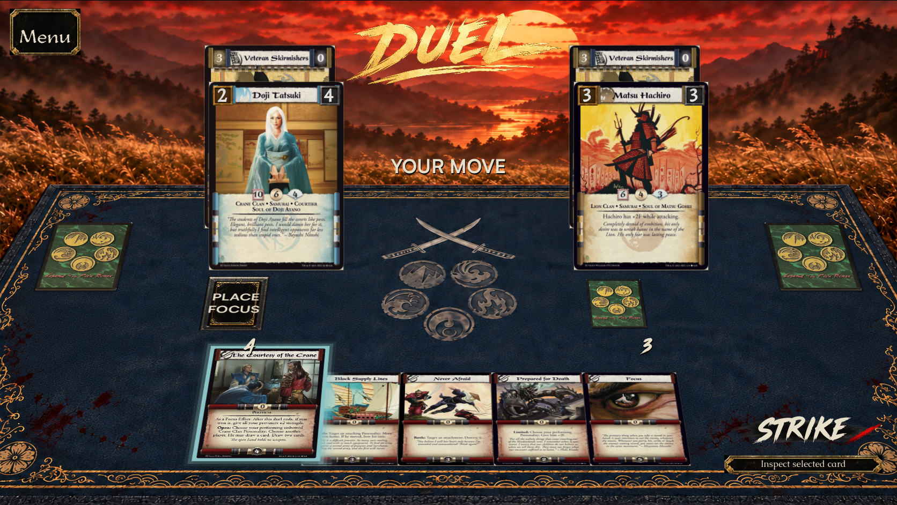
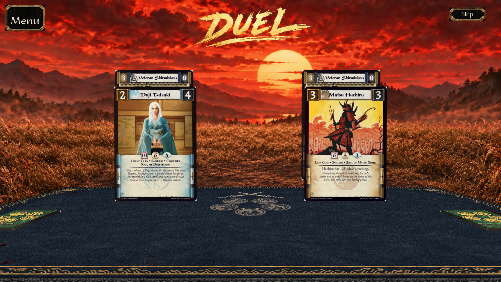
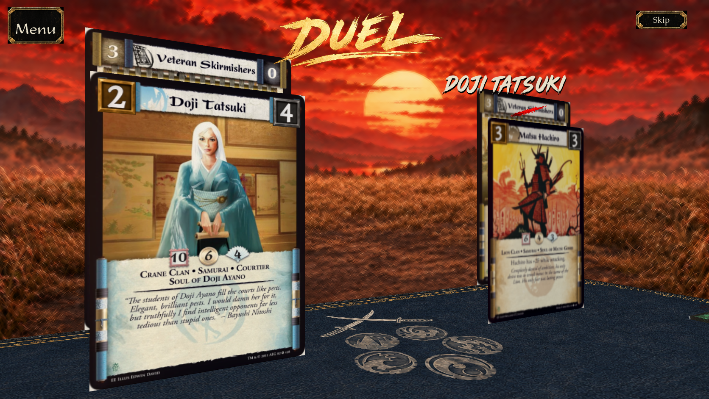
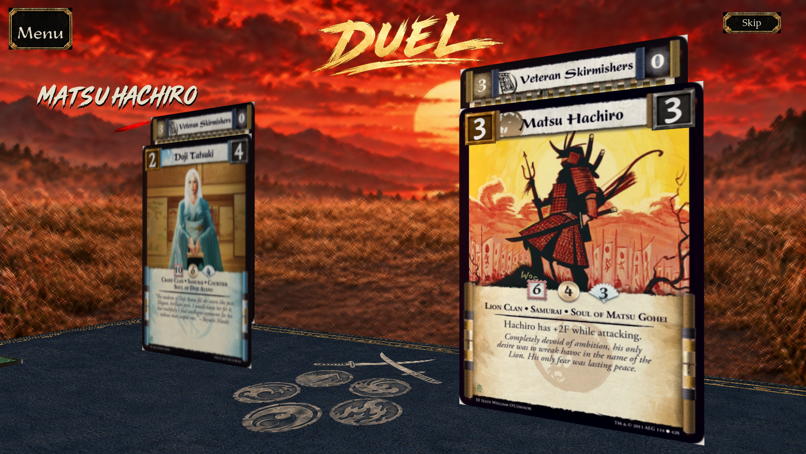
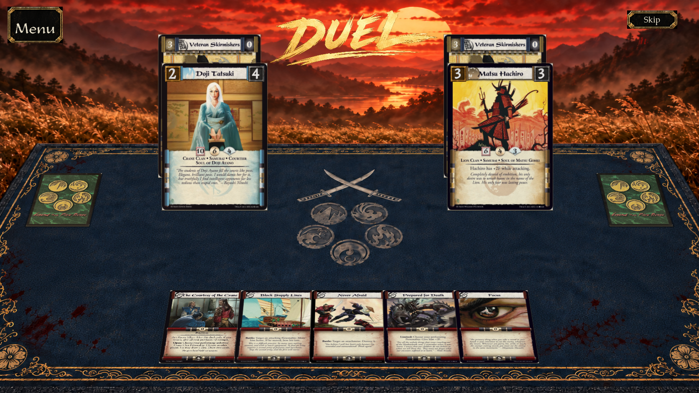
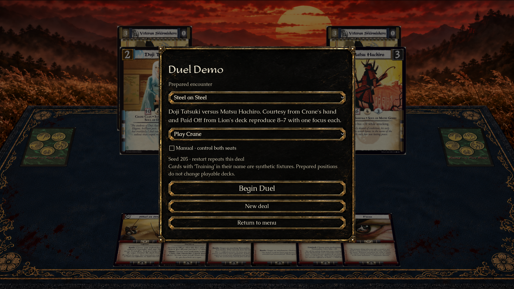
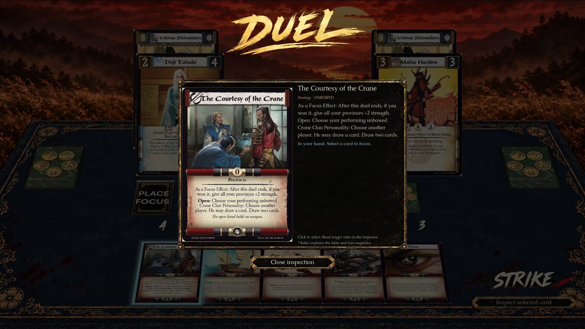
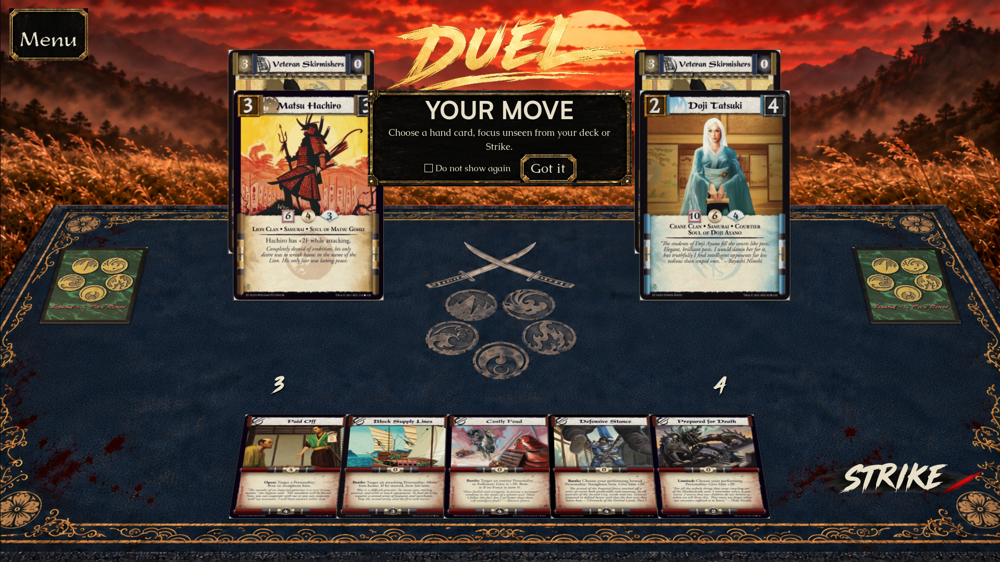
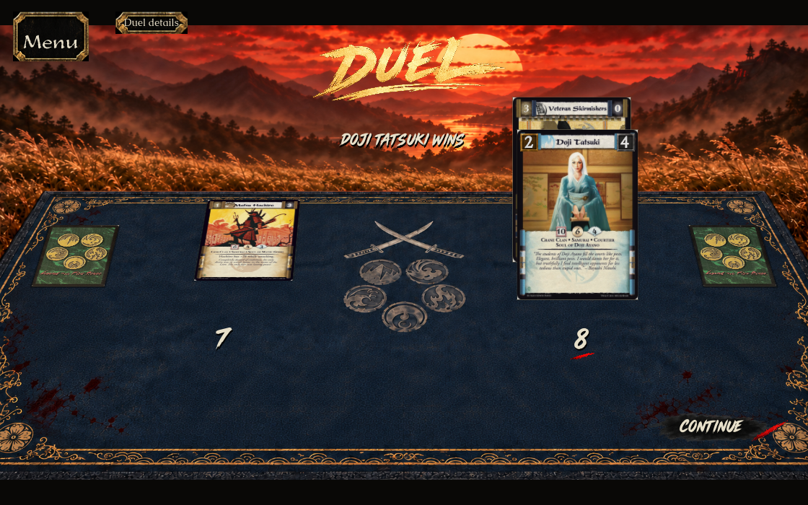

Native Godot captures, September 16, 2026. The side decks share the hand’s table projection. Satoshi marks the turn and focus destination; menus and inspection use the shared lacquer skin. The gold DUEL title persists. Actual card scans and engine attachments retain their identities.









Exact native assertions, run metadata and file hashes · Generated asset prompts and source provenance. Captures are evidence of this Mac build, not a Windows playtest, rules-lead acceptance, or a pixel-identity claim. Fixed-FPS capture timings include screenshot/video work and are not a performance benchmark.